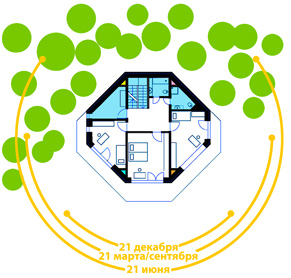
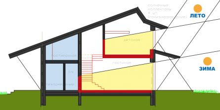
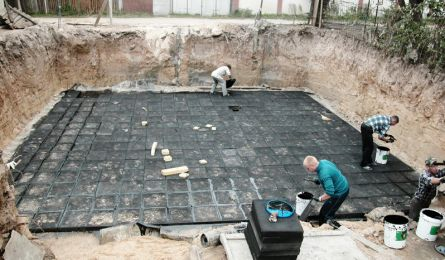
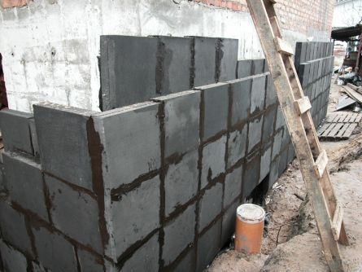
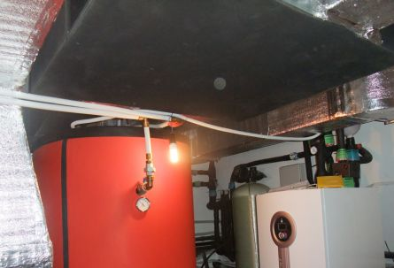
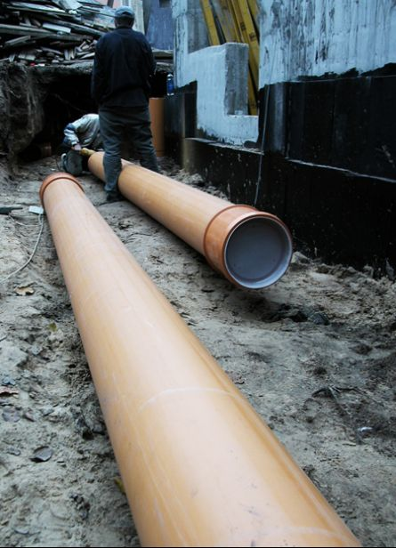

В статье приведена классификация зданий по их уровню энергопотребления, рассматриваются основные принципы проектирования и строительства пассивных домов.
Что такое " Пассивный дом "

Содержание:(скрыть)
Классификация зданий по их уровню энергопотребления.
Рис 1.Пример применения основных ландшафтно-планировочных и некоторых объемно-планировочных принципов
Рис 9. Пример грунтового теплообменника
Для того чтобы понять, как различные строения отличаются между собой по их уровню энергоэффективности (или отсутствия такового), рассмотрим для начала европейскую классификацию зданий в зависимости от уровня энергопотребления во время их эксплуатации:
- Старые здания (здания построенные до 1970-х годов) —требуют для своего функционирования (отопления и охлаждения) около 300 кВт-час/м? в год. Этот стандарт, к сожалению, до сих пор отвечает и обычному зданию, которое строится в Украине.
- Новые здания (которые строились в Европе с 1970-х до 2002 года) — 150 кВтh/(м?a).
- Дома низкого потребления энергии (с 2002 года в Европе не разрешено строительство домов с большим энергопотреблением!) — 60 кВт-час/м? в год.
- Пассивный дом (принят Закон, согласно которому с 2025 года в Европе нельзя строить дома по стандартам ниже, чем пассивный дом) — 15 кВт-час/м? в год.
- Дом нулевой энергии (здание, архитектурно имеющее тот же стандарт, что и пассивный дом, но инженерно оснащенное так, чтобы потреблять исключительно только ту энергию, которую само и вырабатывает) — 0 кВт-час/м? в год.
- Дом плюс энергии (здание, которое с помощью установленного на нем инженерного оборудования: солнечных батарей, коллекторов, тепловых насосов, рекуператоров и т.п. вырабатывает больше энергии, чем само потребляет).
С 2025 года в Европе можно будет строить дома не ниже стандарта пассивного. При этом, дома нулевой или плюс энергии не отличаются от пассивного стандарта своими архитектурно-планировочными решениями и принципами строительства. В них увеличивается только объем и мощность инженерного оборудования на основе альтернативных источников энергии.
Таким образом, пассивный дом — это стандарт, к которому сейчас cтремится прогрессивное европейское сообщество. Считается, что концепция пассивного дома предлагает застройщику рациональное соотношение цены и получаемого качества в проектировании и строительстве. В зависимости от желания и финансовых возможностей заказчика, пассивный дом может потребовать увеличения затрат при строительстве от 3% до 30% по сравнению со стоимостью возведения обычного украинского дома. Но, при этом, на эксплуатационных расходах в этом доме будет экономится от 70% до 99%, что, к сожалению, у нас в Украине еще не очень актуально, так как цены на энергоносители далеки от европейских.
И все же, если только с помощью рационального проектирования можно значительно уменьшить затраты на эксплуатацию здания, то почему бы и нет?
Первое, что нужно понимать, когда речь заходит о пассивном доме: для того чтобы строить энерговыгодно средств нужно не на много (на 3-7%) больше, чем для обычного строительства. Ведь пассивный дом называется «пассивным» именно потому, что он уже за счет своей архитектуры — то есть не активно (с помощью инженерного оборудования), а пассивно (с помощью планировочного решения) — поглощает, аккумулирует и сохраняет для своих жильцов максимальное количество энергии из окружающей среды. Это достигается именно с помощью архитектурно-планировочного решения, которое основывается на обеспечении попадания внутрь здания максимального количества энергии от низкого зимнего солнца и максимально долгого ее сохранения с помощью качественной теплоизоляции, соответствующего пространственно-планировочного решения, а также почти полного отсутствия теплопотерь через вентиляцию.
Основные принципы проектирования пассивных домов.Суть пассивного дома заключается в экономии уже 80% энергии на эксплуатационных расходах только с помощью соответственного архитектурного проектирования, а также использования системы контролируемой приточно-вытяжной вентиляции с рекуперацией. Основные принципы проектирования пассивного дома можно разбить на следующие подразделы:
Ландшафтно-планировочные.
Правильная ориентация здания по сторонам света, основные принципы "правильности" описаны ниже:
• ветрозащита северной глухой стороны здания, закрытость этой стороны: зеленые насаждения, лес, другое здание и т.п.;
• открытость объема здания с юга, отсутствие затенения южного фасада.

Рис 1.Пример применения основных ландшафтно-планировочных и некоторых объемно-планировочных принципов
На рисунке 1 видно, как применены эти принципы, на примере пассивного дома под Черниговом (арх. Т.Эрнст). План дома компактный. С южной стороны выполнено полное остекление Северный фасад глухой, без окон, со стороны северного фасада внутри дома расположены буферные зоны. С севера дом защищен дерерьями, с юга- полностью открыт.
Объемно-планировочные.
- максимальная компактность здания. Компактность — это соотношение площади ограждающих конструкций (оболочки здания) и всего объема здания (его полезной площади). Чем меньше площадь ограждающих конструкций по отношению к полезной площади здания, тем компактнее оно;
- по возможности полное отсутствие эркеров, внутренних углов, балконов и т.п. Идеальной считается максимальная приближенность формы здания к самой компактной: полушару, стоящему срезом на земле;
- зонирование: разделение на буферные и жилые зоны;
- расположение вспомогательных помещений с севера в качестве буферных зон;
- расположение жилой зоны на юго-востоке;
- расположение зимних садов с южной стороны;
- наличие наружной летней солнцезащиты в виде выступающих архитектурных элементов: эркеров, карнизов, балконов, террас, затеняющих светопрозрачные конструкции и не дающие попадать лучам высокого летнего солнца в здание.
Примечание: этот пункт не должен вступать в противоречие с требованием к компактности плана (то есть, компактности именно "теплого" объема здания). Защита от солнца- это архитектурные элементы, а не "вычурность" плана дома. Солнцезащитные элементы имеют, как правило, свою собственную несущую конструкцию и отдельный фундамент, так как являются "холодными" (не утепленными) и находятся снаружи от утепленной оболочки здания.

Рис 2. Разрез-схема попадания солнечных лучей в дом
На рисунке 2 показано, как применены объемно- планировочные принципы, на примере типового пассивного дома (арх.Т.Эрнст). Видно, как проникают в дом лучи низкого зимнего солнца, при этом выполнена защита от летнего перегрева (с помощью свеса кровли, а также навеса террасы). Также видно, что буферные помещения дома расположены с северной строны.
Фасадные (правильное остекление здания).
- отсутствие светопрозрачных частей, через которые тепло покидало бы здание, на его северной стороне;
- расположение с юга максимального количества светопрозрачных конструкций, которые пропускали бы глубоко в здание лучи низкого зимнего солнца;
- окна и другие светопрозрачные конструкции должны располагаться на фасаде в таком соотношении: 70-80% всех окон с южной стороны, 20-30% с восточной, 0-10% с западной и полное их отсутствие с северной.
Аккумулирующие.
- наличие массивных аккумулирующих элементов внутри помещений для обеспечения приема, сохранения и отдачи ими энергии в местах, куда попадают прямые солнечные лучи от низкого зимнего солнца. Массивными аккумулирующими элементами в этом случае могут служить стены из полнотелого кирпича или бетона, желательно, отделанные изнутри глиняной штукатуркой. Если стены изнутри отделаны гипсокартоном - то массива уже нет. Если стены выполнены из пустотелого кирпича, пено или газоблока, или дерева - то массива тоже нет;
- использование тромб-стен.
Примечание: тромб стены предназначены для улавливания и аккумулировании солнечного излучения, используемого для нагревания воздуха внутри отапливаемого здания. Циркуляция воздуха в пространстве между остеклением и лучепоглощающей поверхностью — естественная, при этом воздух из каждого помещения выходит через отверстие в нижней части стены, проходит между стеной и остеклением наверх, и уже нагретый воздух возвращается в помещение через отверстия в верхней части теплоаккумулирующей стены.
- планирование неглубоких помещений, в которых низкое зимнее солнце попадало бы на заднюю массивную (желательно темную) стену, прогревая ее;
- массивные элементы внутри здания (простенки, внутренние части утепленных наружных стен) также способствуют пассивному накоплению в здании ночного холода в летний зной;
- улавливание аккумулирующими элементами энергии «внутренних источников тепла» (бытовых приборов, тела человека, лампочек, компьютеров и т.п.).
Изоляционные.
- качественная наружная теплоизоляция внешней оболочки здания: полное утепление всех сторон здания: фундамент, стены, крыша и т.д.;
Примечание: под "качественной теплоизоляцией" подразумевается, что теплопроводность плотных ограждающих конструкций (фундамента, стен, крыши) в пассивном доме не должна превышать 0,15Вт/(м?хК). Теплопроводность окон и других светопрозрачных конструкций не должна превышать 1Вт/(м?хК).
- качество теплоизоляционного материала: его коэффициент теплопроводности, уровнь паронепроницаемости и теплоотражающих свойств, необходимая толщина слоя утеплителя;
- качество нанесения теплоизоляции: отсутствие щелей между ее частями, деталями, стыками, фугами, швами; отсутствие мостиков тепла (проверяется термографированием, при помощи тепловизора);
- максимально возможная герметичность (воздухонепроницаемость) внешней оболочки здания (проверяется тестом Blower Door).

Рис 6. Пример утепления и гидроизоляции под фундаментной подушкой

Рис 7. Наружная изоляция стен пассивного дома в Киеве, арх.Т.Эрнст
Инженерные.
- система контролируемой приточно-вытяжной вентиляции с рекуперацией ;
- использование подземных каналов (грунтовых теплообменников ) для пассивного предварительного подогрева (или охлаждения) воздуха или воды.

Рис 8. Пример рекуператора

Рис 9. Пример грунтового теплообменника
Выводы.
За счет вышеперечисленных приемов, пассивным способом, экономится огромное количество энергии. В результате — мы получаем пассивный дом, который на эксплуатацию (отопление и охлаждение) требует не более 20% от обычного дома. Причем это не стоит застройщику почти никаких дополнительных инвестиций при строительстве. Все что нужно сделать — это создать правильный архитектурный проект будущего здания и качественно воплотить его в жизнь. Дополнительные расходы на увеличение толщины утеплителя, как правило, нивелируются компактностью здания. А система приточно-вытяжной вентиляции является, по большому счету, обязательной абсолютно для любого типа здания, а не только для энерговыгодных домов. Ведь контролируемая вентиляция — это единственный метод, который обеспечивает 100% качество воздуха постоянно.
Дополнительную же энергию на обслуживание дома можно экономить уже активно: с помощью соответствующего инженерного оборудования (тепловые насосы, солнечные коллекторы, солнечные батареи, ветряки и т.п.), работающего от альтернативных источников энергии (тепла земли и солнца, силы ветров и т.п.). Подобная инженерия в пассивном доме является не обязательной, а только опциональной. Она может значительно (на 10-30%) повысить сметную стоимость здания, но с ее помощью можно свести затраты по эксплуатации дома и его вредное воздействие на окружающую среду практически к нулю, получив, так называемый дом «нулевой энергии», а при желании и наличии средств, даже дом «плюс энергии».
Автор : Tetiana.Ernst